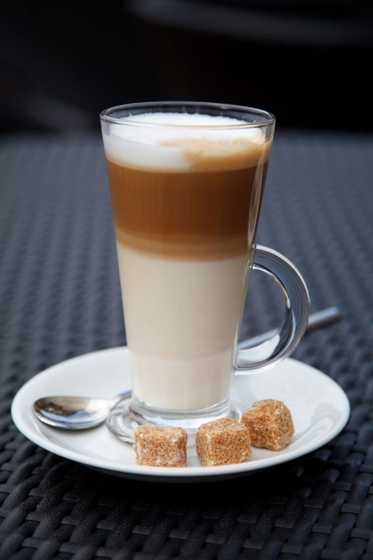
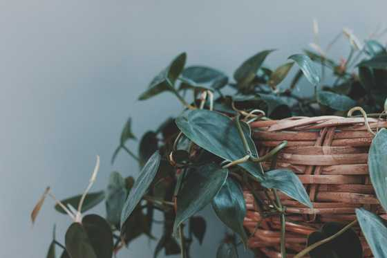
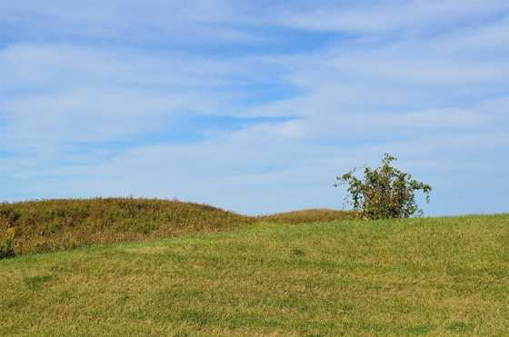
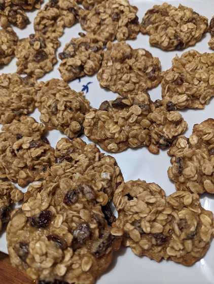
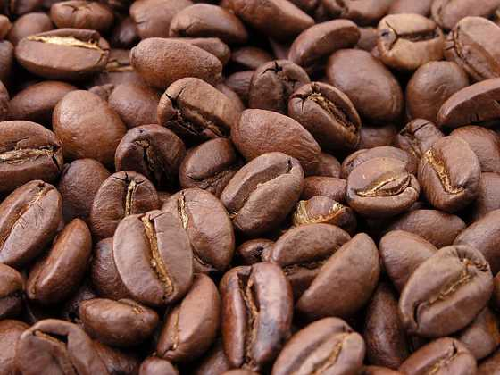

福井県小浜市 中名田 ・ 旧郵便局舎の純喫茶
コミュニティカフェ金四郎
受け継がれた家の名と古い郵便局舎に、一杯のサイフォン珈琲と、人が集まるあたたかさを。

※コンセプトの一文は制作側のイメージです。
写真はフリー素材のイメージで、店舗の実際の様子ではありません。他地域で撮影されたもの、撮影地が不明なものを含みます。
お店の由来・想い
「金四郎」は、オーナーの吉村順子さんの実家のかつての屋号と伝えられています。
旧中名田郵便局舎を改修
2016年、実家と同じ敷地にある旧郵便局舎を含む6棟を相続し、解体せずに活かす道を選ばれたそうです。そのうち旧中名田郵便局舎を、第一弾の空き家活用としてカフェに改修しました。2021年には国の登録有形文化財に登録されています。
子どもも大人も集まる場所
「子どもたちが日常的に楽しみ、人や自然とのつながりを実感できる場所をつくりたい」という想いから。1階は昭和レトロな雰囲気の純喫茶、2階は子どもの居場所やサークル活動などに使えるフリースペース(レンタルスペース)になっています。
市街地から南川上流へ
小浜市の市街地から南川の上流へ車で約20分、中名田地区にあります。2022年3月に地域の交流拠点としてプレオープンしたと紹介されています。




出典:ふーぽ「嶺南こんにちは通信」、福井新聞、中日新聞ほか。店名の語感や雰囲気づけは制作側のイメージを含みます。
メニュー・ご提供
紹介記事などで、次のようなものが紹介されています。価格・提供状況・営業時間などの詳細は準備中です。
サイフォン珈琲
サイフォン式で淹れる珈琲。金四郎オリジナルブレンドの珈琲豆もあるそうです。
金四郎プリン
昔ながらの、固めのプリンと紹介されています。
駄菓子・オリジナルグッズ
1階の物販コーナーで、駄菓子や雑貨・オリジナルグッズを扱っています。




上の写真は雰囲気を伝えるイメージで、提供メニューそのものではありません。メニュー詳細・価格:準備中
口コミ
以下は、イメージをつかんでいただくための創作の例です。実際のお客様の声ではありません。
古い郵便局の建物がそのまま残っていて、入った瞬間に時間がゆっくりになりました。珈琲の香りも落ち着きます。
来店イメージ1(創作のイメージ例です)
プリンがしっかりした固さで、どこか懐かしい味。駄菓子のコーナーを眺めるのも楽しいです。
来店イメージ2(創作のイメージ例です)
2階のスペースで子どもと過ごせて、地域の方とも話ができました。また寄りたい場所です。
来店イメージ3(創作のイメージ例です)
季節の景色
南川沿いの山あいの、移ろう景色のイメージです。

アクセス・お店の情報
- 住所
- 〒917-0355 福井県小浜市下田41-17
- 電話
- 準備中
- 営業時間
- 準備中
- 定休日
- 準備中
- @kinshiro1920
営業日・時間は変更されることがあります。お出かけ前にInstagramなどでご確認ください。